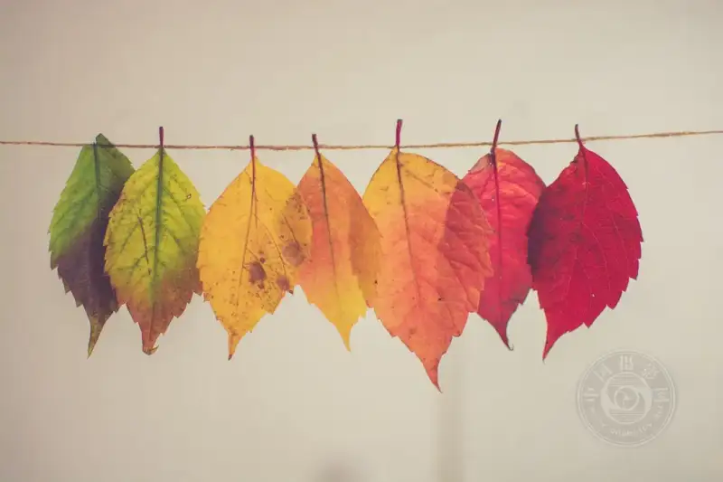
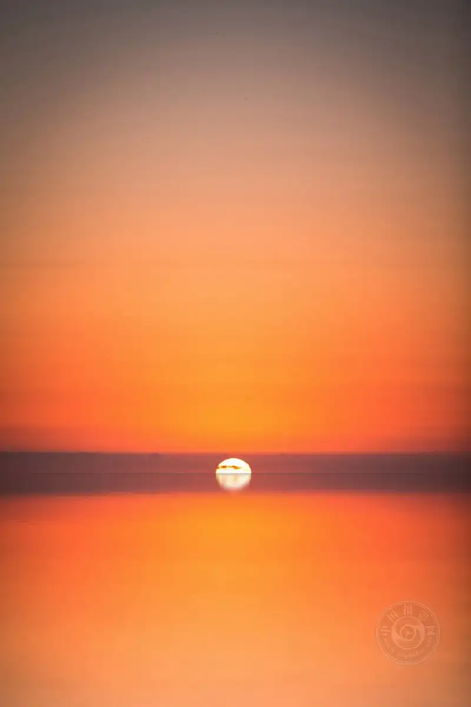
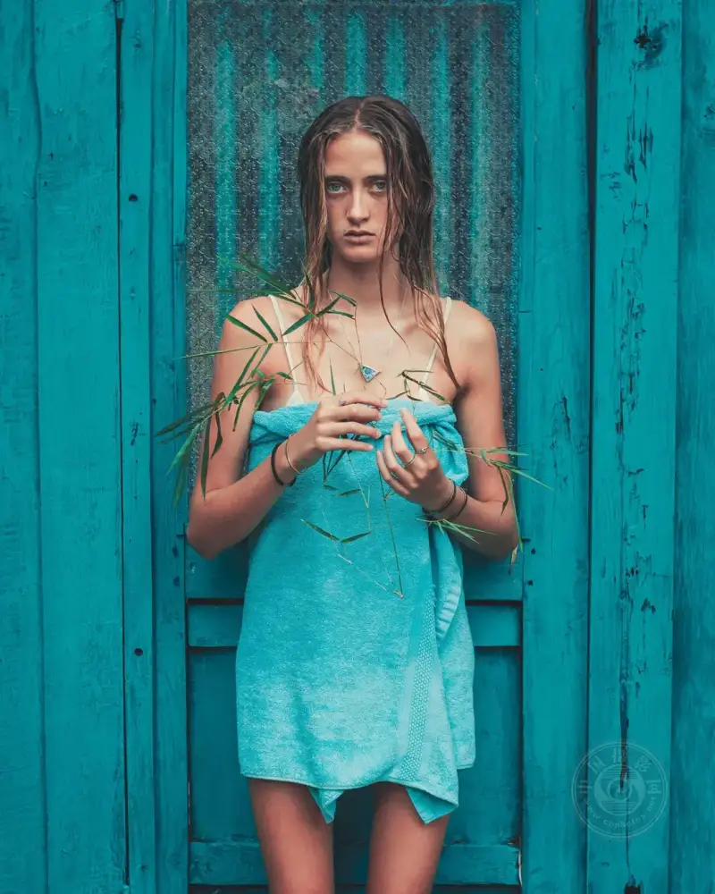
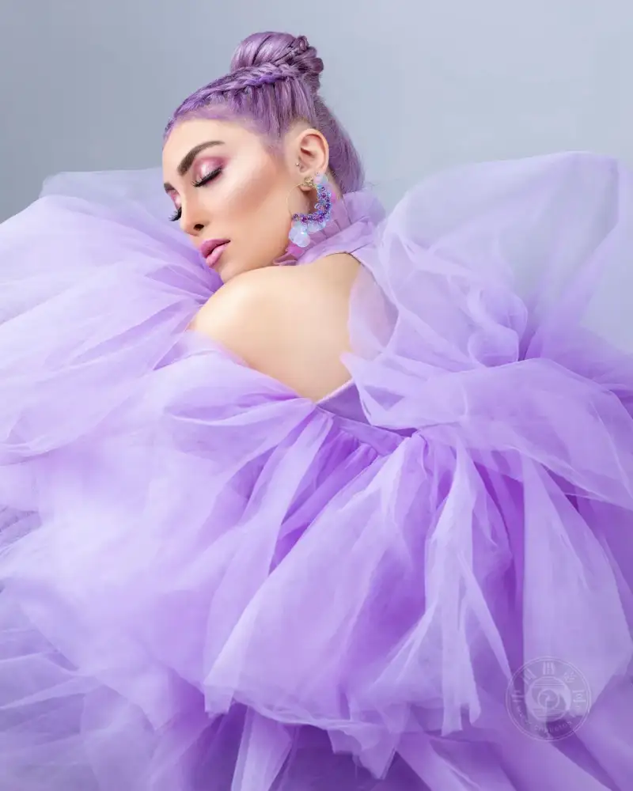
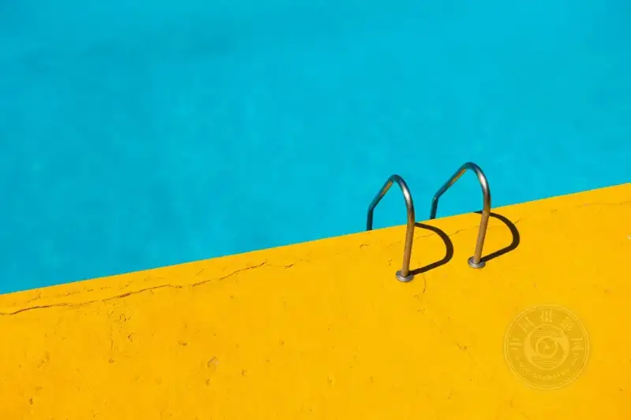
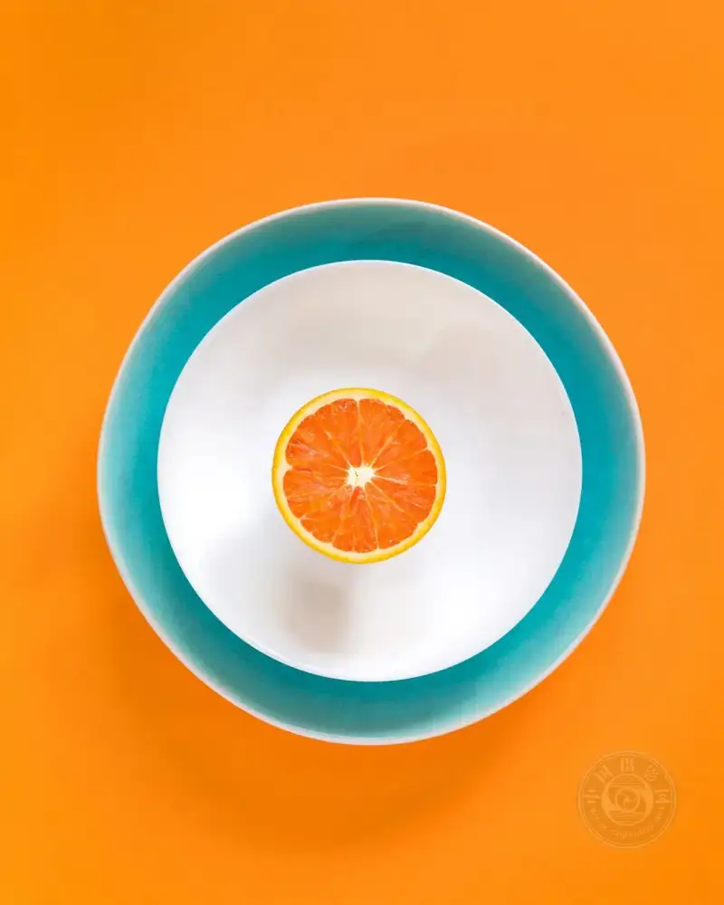
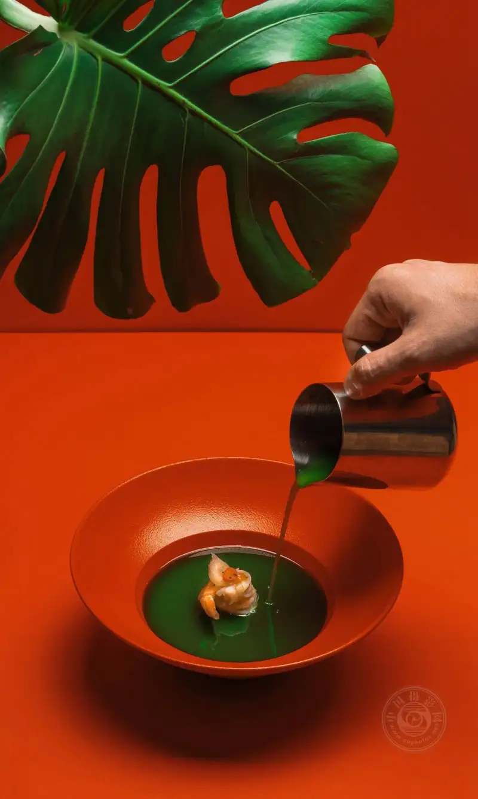
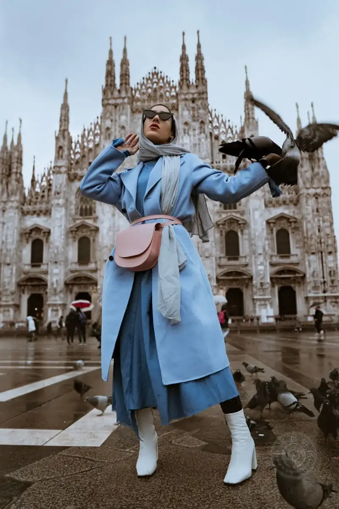

Published: 2023-05-08
Original link: https://www.cnphotos.net/academy/show-135.html
As a photographer, you already know that lighting, composition, and subject are key parts of a good photo. But have you considered the power of color? Color is a basic element of design. It has a deep effect on the mood and feeling of an image.
In photography, color plays a key role in conveying emotion and creating visual impact. Whether you are a professional or a hobbyist, understanding color harmony, complementary colors, and single-color themes will help you create strong images that connect with viewers.

©Chris Lawton
So how do you create color harmony?
Color harmony is the way colors work together in an image. A painter must know which colors to mix to give a work a unified look. In the same way, you as a photographer should know which colors to bring into your frame. Harmonic colors are essential for images that feel balanced, beautiful, and pleasing.
There are many ways to create harmonic colors, for example by using a single color or by using complementary colors.
Single color
A single color means using one main color in an image. It can draw attention to a specific part, or create a mood. For example, a black-and-white photo of a red rose can feel dramatic and strong. In the same way, a sunset photo that keeps only the sun and its reflection in the water in color can feel dreamy and romantic.

©Braden Jarvis
The method here is to catch several different elements that share the same color, or at least the same shade of that color.

©Sebastian Staines
In the image above, this is not just a photo of a teal wall. It brings in other matching elements, such as a teal dress worn by a model with teal eyes, and teal accessories. The more elements you can hold within the same color range, the more the image draws the viewer's eye.
Keep this in mind. We want the viewer's eye to be caught by our photo first, then to stay on it and not look away. When we do that, we have made color magic. Sticking to a single color in the frame is a good way to reach that goal.

©Sara Dabaghian
Complementary colors
Complementary colors sit opposite each other on the color wheel. Examples are blue and orange, yellow and purple, and red and green. Even some shades of red and blue are opposite. They all have strong impact.
©Guzman Barquin
When you use complementary colors together in an image, they create a strong visual contrast. This draws the viewer's attention and makes the image stand out.
One popular way to use complementary colors is to place the subject on a background of the opposite color. For example, a model in a blue suit in front of an orange wall creates a striking visual that catches the viewer's eye.

©Etienne Girardet

©Mei Mu
Add detail with more colors
Next, widen the approach. Bring in two or more colors to create a more artistic photo.

©Ruslan Bardash
Two complementary colors can make a photo look more artistic and playful. In the image above, the green leaves bring out the green sauce more than they would alone.
The colors are not spread evenly. The goal is to bring harmony and a kind of symmetry to the image. Of course, if you place colors using the rule of thirds or the golden ratio, they can have even more impact.
Cool and warm colors
Half of the color wheel is cool tones, and the other half is warm tones. Blue, purple, and green can feel cold. Red, orange, and yellow give a warm feeling.
Using colors from the same half of the wheel sets a clear mood for an image. If you use all warm colors, it feels energetic and bold. If you use all cool colors, it sets a moody, sad, and dramatic feeling.
This way, you do not have to pick the same color. You only need to make sure all your colors are cool or all are warm, and do not mix the two. The image below uses cool tones to set the color harmony.

©Alexi Romano
Color is a key part of photography. Knowing how to use color well helps you create strong images. By creating harmonic colors, using complementary colors, and using a single color, you can make images that draw the viewer's eye and connect emotionally.
Next time you pick up your camera, think about the role of color in your image. Try different colors to create photos with both visual and emotional impact.